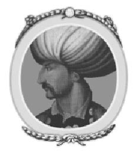
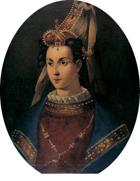
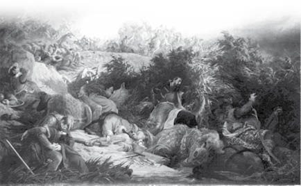
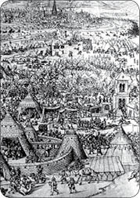
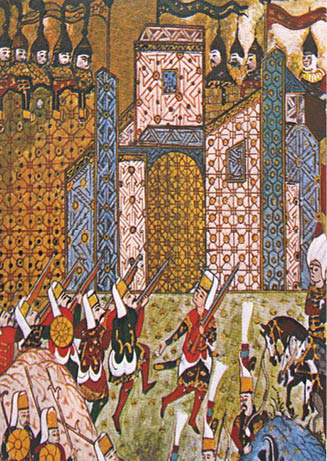
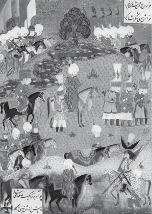
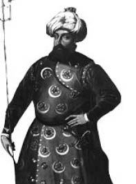
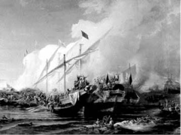
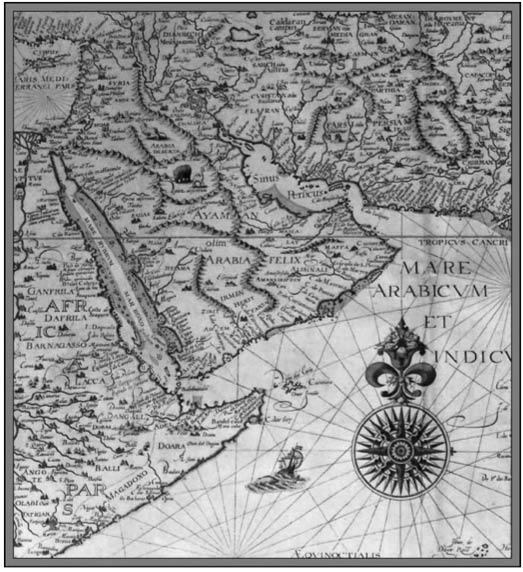
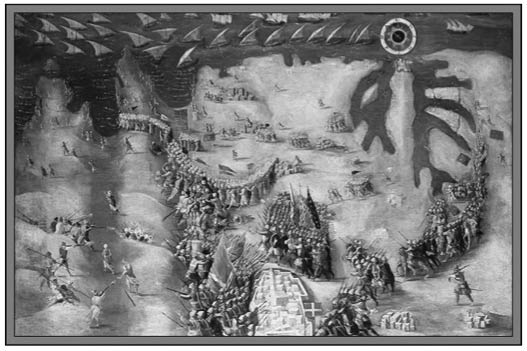

X: MUHTEŞEM SÜLEYMAN
1520-1566

Selim’in yerine yirmi altı yaşındaki tek oğlu Süleyman padişah olmuş ve bu dönem, Osmanlı İmparatorluğu tarihinin eşsiz bir ihtişama sahip olan doruk noktası olarak ele alınmıştır. Bu durumun asıl sebebi, yeni sultanın kişisel niteliklerinden kaynaklanmaktadır. Süleyman, bütün seleflerini ve yozlaşmış bütün haleflerini haysiyet ve merhamet açısından gölgede bırakmıştır. En iyi padişahların askerî kabiliyetleri, hareket güçleri ve kişisel cesaretleri açısından onlardan geri değildir. Bu niteliklerini yüksek kademedeki devlet adamlığı ile birleştirmiştir. Nadir istisnalar hariç sözlerini tutmuş ve kâfirlerin inanışlarının sürdürülmesinin gerekmediğine dair emirlere itaat etmemiştir. Yönetici ve kanun koyucu olarak çok başarılı bir insandır. Tahta çıkmadan önce, babası tarafından üç önemli vilayetin valisi olarak görevlendirilmiş, milletleri ve inanışları ne olursa olsun bütün tebaasına adil davranma azmiyle nam salmıştır. Özel hayatı da çalkantılardan uzaktır. Şefkati ve iyilikseverliğiyle tanınmaktadır. Zaferlerden veya kalelerin ele geçirilmesinden sonra toplu ölümler yaşandıysa bu Süleyman’ın vahşi ve kana susamış Yeniçerilerini zapt edememesinden dolayıdır; fakat bu olaylar nispeten nadir yaşanmıştır. Seleflerinin birçoğunda olduğu gibi Süleyman’ın karakterinde de bir nebze zalimlik vardır. Tek şehzade olduğu için tahta çıkarken Fatih Sultan Mehmed’in koymuş olduğu kardeş katli kanunu uygulanmamıştır. Fakat ne kadar uzaktan olursa olsun ailesinde tahta rakip olabilecek kimsenin kalmamasına dair hırs yapmıştır. İki yıl sonra, Rodos askerlerinin hayatları ve mallarının güvence altına alınması üzerine teslim olmalarından sonra, Süleyman sözünden dönerek, bu af kapsamında bulunanlardan biri olan Cem Sultan’ın oğlunun ve dört torununun ivedilikle infaz edilmesini buyurmuştur. Kardeş katlinden daha kötüsü ise Süleyman’ın kendi iki oğlunu öldürmesi olmuştur. En büyük oğlu Mustafa gelecek vadeden bir şehzadedir. Kabiliyetini vilayet valisi olarak da çok iyi bir şekilde göstermiştir. Babasının bütün iyi nitelikleriyle donatılmış bir insandır. Ordunun gözdesi, ülkesinin ise umudu olmuştur.
Süleyman, üzerinde sonsuz tesiri olan ve bunu hayatının son zamanlarına dek sürdüren Rus kökenli en son gözdesi olan cariyesi Hürrem tarafından, Şehzade Mustafa’nın, Selim’in Bayezid’e yapmış olduğu gibi, kendisine karşı tuzak kurarak tahttan indirmeyi hedeflediği konusunda ikna edilmiştir. Herhangi bir ikazda bulunulmadan veya kendisini savunma hakkı tanınmadan, şehzade Mustafa 1553 yılında ikinci İran seferi sırasında babasının çadırına girdiğinde suskunlar tarafından yakalanmış ve Süleyman bu kalleşliği seyrederken iple boğulmuştur. Diğer oğlu Bayezid’i, 1561 yılında Sultan’ın hareminde kardeşi Selim’e kumpas kurmaya teşvik edilmesi üzerine silah kuşanmasından dolayı öldürmüş olmasının mazereti ise daha büyüktür. Bayezid bozguna uğratılmış ve İran’a kaçmış burada da Şah İsmail’in halefi olan Şah Tahmasb’ın teslim edilmeyeceğine dair sözü ile büyük bir şerefle karşılanmıştır. Fakat Süleyman, Bayezid’in iadesini savaş tehdidi ve 400.000 altın vaadiyle almayı başarmıştır. Bahtsız şehzadeye onur kırıcı bir şekilde davranılmıştır. Bayezid dört oğlu ile birlikte, kardeşi Selim’in hepsini bir an önce ölüme gönderen özel bir elçisine teslim edilmiştir.
Süleyman’ın bu iki oğlunun öldürülmesi üzerine tahta vâris olabilecek tek şehzade olarak Hürrem’in oğlu kalmıştır. Süleyman’ın halefi olan Selim “Sarı Selim” olarak da bilinmektedir. Bu şehzadenin kendi atalarının hiçbir iyi niteliğine sahip olmadığı görülecektir. Selim, Süleyman ve selefleri tarafından genişletilen Osmanlı İmparatorluğu’nun büyük bir kısmını kaybeden yozlaşmış padişahların ilkidir.
Sadrazamlık makamı, bu görevi yapan kişiler için I. Selim zamanında olduğu kadar tehlikeli olmasa da Süleyman’ın egemenliği döneminde bu makamın sahibi olan dokuz kişiden ikisinin ölümüyle sonuçlanmıştır. Süleyman’ın hayatının en dikkate değer vakalarından biri ikinci sadrazamı olan İbrahim’e duyduğu dostluktur. Dinden dönme bir Rum olan İbrahim küçük bir çocukken korsanlar tarafından kaçırılıp, İbrahim’i bir Müslüman olarak yetiştiren ve Manisa’da yaşayan dul bir kadına köle olarak satılmıştır. İbrahim’in yeteneklerinin farkına varan kadın ona çok iyi bir eğitim vermiştir. Bu vilayeti ziyaret ettiği sırada İbrahim ile tanışan Süleyman onun müzik kabiliyetinden çok etkilenerek İbrahim’i kendi hizmetine almış ve hasodabaşısı yapmıştır. İbrahim kısa zamanda sultanın üzerinde büyük bir nüfuza sahip olmuş ve sultanın kız kardeşiyle evlendirilmiştir. Makamı hızlı bir şekilde yükseltilmiş ve 1523 yılında vezir-i azam ilan edilmiştir. Sultan ve İbrahim ayrılmaz ikili haline gelmiştir. Yemeklerini birlikte yemişlerdir. Devletin bütün işleri için birlikte karar almışlardır. İbrahim, sultanının bu seçimini yeteneğiyle, ondan hiçbir açıdan geride kalmaması ve hatta eğitimi ile yabancı dil ve tarih bilgisi açısından sultandan ileri olması konusunda, ispatlamıştır. Sultanın kumandanlık edemeyeceği zamanlarda seraskerlik veya başkumandanlık yapmıştır. İlk Macaristan ve İran seferleri ile Viyana kuşatmasında aktif olarak yer almış ve sultana danışmanlık yapmıştır.

Hürrem Sultan
İbrahim Paşa’ya on üç yıl boyunca duyulan itimadın ardından sultan’ın aklında kuşkular uyanmaya başlamış ve bu kuşkular sadrazamlık mevkisini damadı Rüstem Paşa için isteyen Hürrem Sultan tarafından da körüklenmiştir. Kendi yükselişiyle mest olmuş İbrahim’in sultan ile eşit olduğunu düşünmesi dışında bu kuşkular için hiçbir dayanak bulunmamaktadır. Kendisinden şüphe duyulan bir sadrazam kötü sona çok yakındır. 1536 yılında bir gün her zaman yaptığı gibi sultan ile akşam yemeği yemek üzere saraya girdikten sonra bir daha canlı görülmemiştir. Ertesi gün cesedi sarayda bulunmuştur. İbrahim’in muazzam servetine devlet tarafından el konulmuştur. Cinayetin işlendiği odanın bitişinde bulunan Süleyman’ın öldürülmekte olan vezirin çığlıklarını bastırmak için Hürrem tarafından öpücüklere boğulduğu söylenmektedir.
Bir başka vaka ise Veziriazam Ahmed’in, sultanını memnun etmeyen bir tavsiye vermesi üzerine Süleyman’ın emriyle Divan-ı Hümayun’da kellesinin uçurulmasıdır. Von Hammer, kitabında aynı kaderi paylaşan üst düzey yetkililerin uzun bir listesini paylaşmıştır.
Egemenliğinin kırk altı yılı boyunca Süleyman, imparatorluğa çok fazla toprak katmıştır. Haleflerine bıraktığı topraklar arasında Belgrat, Rodos, Macaristan’ın neredeyse tamamı, Kırım, Musul, Bağdat ve Basra vilayetleri, Ermenistan’ın İran’dan alınan bir kısmı, Arabistan’da Yemen ve Aden, Cezayir, Oran ve Libya, Kuzey Afrika’da Arapların mesken tuttuğu tarifi imkânsız boyutlardaki iç bölgeler ve Nubiya yönünde Mısır’ın büyük bir çoğunluğu yer almaktadır. Uzun süren egemenliği boyunca silah kuşanmadığı yılların sayısı çok azdır. Kuzey’de Macaristan ve Avusturya ile yapılan savaşları, Doğu’da İran ve Batı’da İspanya ile yapılan savaşlar takip etmiştir. Süleyman genellikle ordularının başında bulunmuştur. Aralarında İran’a yapılmış olan sefer gibi iki yıl süren seferlerin on üçünün başında durmuştur. Bu savaşlar çoğunlukla haklı veya hatta makul bir sebep olmadan başlatılmıştır. Sultan açısından fetih arzusuyla, Yeniçeriler açısından ise faal bir hizmet verme ve yağmalama maksadıyla gerçekleştirilmiştir. Dinî bağnazlık, savaş nedeni veya sonucu olarak çok az bir rol oynamıştır.
Süleyman’ın ilk seferi, Fatih Sultan Mehmed’e başarıyla direnen şehir Belgrat’a 1521 yılında düzenlenmiştir. Süleyman, yüz bin asker ve üç yüz silahtan oluşan ordusunun başına geçerek Belgrat seferini başlatmıştır. Bölge, Macarlar tarafından cesurca savunulmuştur. Fakat Macarlar silahsız savunma yapmıştır. Yedi gün süren bombardımandan sonra taarruz yapılmış ve şehir ele geçirilmiştir. Askerler veya bölge halkı öldürülmemiştir. Süleyman, baş kiliseyi camiye çevirmiştir. Şehir, Türk güçleri tarafından korunmuştur. Belgrat, imparatorluğun Tuna’daki baş kalesi olmuş ve Macaristan’a yapılmış birçok akında geçit rolü üstlenmiştir.
Ertesi yıl, 1523 senesinde, bu başarıyı Fatih Sultan Mehmed’in başarı sağlayamadığı Rodos adasına yapılan saldırı izlemiş ve bölgenin ele geçirilmesi, İstanbul’dan deniz yoluyla direk güzergah üzerinde bulunduğu için Mısır’ın fethinden beri, daha da önem kazanmıştır. Bu nedenle, Süleyman, üç yüz gemi, sekiz bin Yeniçeri ve yüz kuşatma silahından oluşan bir donanma göndermiştir. Anadolu’dan, Rodos’un karşısındaki Marmaris’e kadar yüz bin askerinin başında gelmiş ve buradan adaya geçmiştir. Altı yüz şövalye, beş bin eğitimli asker ve adadaki köylülerden oluşan düşman ordusu Büyük Usta de L’Isle Adam komutası altında adayı kahramanca savunmuş; fakat dokuz ay süren bir kuşatmadan sonra silah bırakmaya mecbur kalmışlardır. Osmanlı tarihinde ilk defa, ateş açmamak için kazma ve küreklerle tünel kazılarak büyük bir kaleye yaklaşılmış, bombalar taarruz ordusu tarafından atılmıştır. Süleyman’ın ordusundan elli bin askerin kazalardan dolayı, bir o kadarının da hastalıktan öldüğü söylenmektedir. Teslim şartları altında, askerlerden sağ kalanlar on iki gün sonra, kendi gemileriyle, bütün mülkleriyle birlikte Girit’e gönderilecektir. Büyük Usta ile yaptığı bir görüşme sonucunda Sultan’ın yüce gönüllülükle şunları söylediği bilinmektedir: “Bu cesur adamı bu yaşında evini terk etmeye zorladığım için üzgünüm.” Şövalyelerin silahlarının, Rodos’ta yaşadıkları evlerin duvarlarına oyulmuş olduğu günümüzde bile görülebilir. Türkler, şövalyelerin yapmış oldukları cesur direnişin anısına onlara her zaman saygı duymuştur. Teslim olma koşulları, bahsedilmiş olan istisna dışında, Süleyman tarafından yerine getirilmiştir. Şövalyeler, o zamanlar neredeyse terk edilmiş bir ada olan Malta’ya yerleşmiştir. Adayı kendi meskenleri haline getirmiş ve takviyelerle güçlendirmişlerdir. Malta’nın Akdeniz’deki merkezî konumu adayı önemli bir yer haline getirmiştir. Süleyman, uzun süren hükümdarlığının son senesinde imparatorluğunun Kuzey Afrika’da daha fazla genişlemesi için şövalyeleri yeni mekânlarından defetmek gerektiğine karar vermiştir. Adayı almaları için Piyale Reis komutanlığında bir ordu ve donanma göndermiştir. Bunun üzerine, şövalyelerin Büyük Ustaları Lavallette komutasında kendilerini savundukları diğer bir şanlı kuşatma yaşanmıştır. Türkler, kalelere yaptıkları saldırıların çoğunda bozguna uğratılmış ve nihayetinde büyük kayıplar vererek adadan ayrılmaya zorlanmıştır.

Mohaç Savaşçı
Rodos’un fethinden sonra Süleyman iki yılını saltanatının düzenini sağlamakla geçirmiştir. Süleyman’ın bu sefersiz dönemi, kışlalarda geçirdikleri yavan hayatlarından nefret eden, savaş ve yağmalama arzusu içinde olan Yeniçeriler tarafından sevilmemiştir. Yeniçeriler isyan başlatmış ve İbrahim ile diğer devlet adamlarının evlerini yağmalamıştır. İsyan bastırılmış ve Süleyman isyankârlardan üç kişiyi kendi elleriyle öldürmüştür. Yeniçerilerin ağaları ve diğer önderleri de öldürülmüştür. Süleyman, bu paragöz askerleri büyük hediyeler vererek memnun etmeyi makul bulmuş ve ertesi yıl, Yeniçerilerin teşviki üzerine, başka bir savaş ilan etmiştir. İmparator V. Charles’ın büyük planlarını bozma umudunda olan Fransa Kralı I. François tarafından Macaristan’a saldırmaya teşvik edilmiştir. Bu saldırı, Türklerin Avrupa politikası labirentine ilk girişleri olarak düşünülebilir. Macaristan ve Bohemya o tarihlerde çok genç ve tecrübesiz bir hükümdar olan II. Louis egemenliği altında birleşmiş bulunmaktadır.
1526 yılının Nisan ayında, Süleyman ve sadrazamı İbrahim, yüz bin asker ve üç yüz silahtan oluşan orduyla Belgrat’a sefere çıkmış ve Macaristan’ı işgal etmiştir. İki ordu, Ağustos ayının 27’sinde, yani İstanbul’dan ayrıldıktan beş ay sonra, Tuna’dan çok uzak olmayan ve Belgrat ile Macaristan’ın hâlâ başkenti olan Budapeşte arasında orta noktada bulunan Mohaç’ta karşılaşmıştır. Savaş hemen başlamıştır. Osmanlı ordusu asker ve silah bakımından ezici bir üstünlüğe sahiptir. Macarlar bozguna uğratılmıştır. Macar kralı, sekiz piskopos, Macar soylularının büyük bir çoğunluğu ve yirmi dört bin asker öldürülmüştür. Bu durum, Macaristan’ın kaderini belirlemiştir. Yollarına devam etmeden önce Süleyman tutsak olarak alınan dört bin kişinin öldürülmesine karar vermiştir. Osmanlılar Eylül ayının 10’unda Budapeşte’ye varmıştır. Şehir, Osmanlılara teslim olmuştur. Mohaç Savaşı’ndan sağ kalan birtakım Macarlı soylu burada teslim olmuştur. Süleyman’ın isteği üzerine, Macaristan’ın ileri gelenlerinden biri ve Transilvanya Voyvodası olan Kont Zapolya, hiçbir vâris bırakmamış olan Kral II. Louis’nin halefi olarak soylular tarafından kral ilan edilmiştir. Bu seçimden kısa bir süre sonra Süleyman, kısmen Anadolu’daki iç karışıklılardan dolayı, Budapeşte’yi terk etmiş ve Tuna’ya çekilmiş, buradan da başkentine geri dönmüştür. Macaristan’ın bir kısmının geçici olarak alınması korku dolu bir yıkım ve nüfusunun büyük bir çoğunluğunun ölümüyle sonuçlanmıştır. İki yüz bin kişinin öldürüldüğü tahmin edilmektedir. Geri çekilen ordu devasa bir ganimet toplamış ve nihayetinde İstanbul’da köle olarak satılmak üzere kadın-erkek yüz bin mahkum almıştır. Macaristan’ın bazı sınır kalelerinde Türk askerleri bırakılmıştır.
Kont Zapolyon’un Türklerin emri altında Macar Kralı olarak seçilmesi ülkede iç savaşa neden olmuştur. Arşidükalığı kardeşi V. Charles’tan alan Avusturya Arşidükü Ferdinand, V. Charles ve merhum Kral Louis arasında yapılan bir anlaşma dolayısıyla tahtta hak iddia etmiştir. Diğer bir taraftan, Zapolya ve yandaşları ise eski bir Macar kanununa göre yalnızca bir yerlinin kral olabileceğini iddia etmiştir. Buna rağmen, Batı Macaristan soyluları Presburg’da toplanmış ve Ferdinand’ı kral ilan etmiştir. Ferdinand silah kuşanmış ve Avusturyalılar tarafından desteklenmiştir. Rakibi Zapolya’yı bozguna uğratmış ve onu ülkeden ihraç etmiştir. Zapolya, Polonya’ya kaçmış ve Macaristan üzerinde iddia ettiği hakka destek olması için Sultan Süleyman’a başvurmuştur. Bu haberi alan Ferdinand, sultana bir elçi göndermiştir. Akılsız Ferdinand yalnızca Macaristan tahtında hak ederek sultandan destek istemekle kalmamış, bir de sultanın egemenliği altındaki Belgrat ve Macaristan’daki diğer şehirlerin de kendisine verilmesini talep etmiştir. İki rakip arasındaki görüşmeleri yönlendiren Sadrazam İbrahim ise küstahça davranmıştır. İbrahim, sultanın atının çiğnediği her bir karış toprağın ebediyen Osmanlı İmparatorluğu’nun olarak kalacağını söylemiştir. İbrahim, “Macaristan Kralı Louis’yi öldürdük. Krallığı artık bizim, ister elimizde tutarız, ister başkasına veririz. Bir kralı kral yapan tacı değil kılıcıdır. Bu kılıç, diğerlerine boyun eğdirir ve kılıcın ele geçirdiği her şey kılıcındır.” demiştir.

I. Viyana Kuşatması
Sultan, Ferdinand’ın aleyhine karar vermiş ve Zapolya’nın elçisine, “Kralının dostu olacağım. Ona yardım etmek için bizzat kendim geleceğim. Peygamberimiz Hz. Muhammed, yüce Rabbim ve kılıcım üstüne yemin ediyorum.” demiştir. Ferdinand’ın elçisine ise kralını derhal ziyaret edeceğini ve onu çalmış olduğu krallıktan def edeceğini söylemiştir. “Ona söyle, Mohaç ve hatta Budapeşte topraklarında savaş için bekleyeceğim, eğer benimle karşı karşıya gelmezse Viyana surları altında savaşacağım.”

Rodos’un Fethi
Bu tehditlerin peşinden, Süleyman 1529 yılında iki yüz elli bin asker ve üç yüz adet silahla Macaristan’ı tekrar işgal etmiş ve Budapeşte’yi kuşatmıştır. Şehri savunanlar arasından çıkan hainlerin talepleri üzerine şehir teslim olmuştur. Teslim olma koşulları altında, askerlerle vatandaşın hayatları ve mallarının korunacağı belirtilmiştir. Kendilerine yağmalama hakkı tanınmayan Yeniçeriler bu koşulları kabul etmeyi reddetmiştir. Kalelerden ele geçirdikleri askerleri öldürmüş ve şehrin genç kadınlarını köle olarak satmak amacıyla yanlarına almışlardır. Zapolya, Macaristan’ın bu kısmında tekrar Süleyman’a bağlı kral olarak ilan edilmiştir. Daha sonra, Süleyman Viyana’ya doğru yola çıkmıştır. 27 Eylül 1529 gününde, iki yüz binin üzerinde askerle Viyana’ya varmıştır. Burada, Osmanlılar tarafından gerçekleştirilen unutulmaz iki Viyana kuşatmasının ilki yaşanmıştır.
Almanya İmparatoru V. Charles o dönemde Avrupa’nın en güçlü hükümdarıdır. Almanya’daki krallığının yanında İspanya, Hollanda, Nepal ve Sicilya krallıklarının da vârisi olmuştur. Süleyman’dan altı yıl sonra doğmuş olan Charles, Süleyman’ın tahta çıkışından bir yıl önce Almanya kralı ilan edilmiştir. Süleyman’ın ölümünden on yıl önce ise tahttan inmiş ve bir manastıra çekilmiştir. Bu iki hükümdar, otuz altı yıl boyunca aynı anda egemenliklerini sürdürmüştür. Hangisinin bir asker olarak daha yiğit veya bir devlet adamı olarak daha zeki olduğunu söylemek zordur. Fetihler açısından bakılacak olursa, Süleyman düşmanını katbekat geçmektedir. Charles, Avrupa’da kendisine kalan toprakların bütünlüğünü korumak dışında pek fazla bir şey yapmamıştır. Fakat Afrika’da Tunus’u, Amerika’da ise Meksika ve Peru’yu topraklarına katmıştır.
Süleyman, Fransa Kralı I. François tarafından Avusturya’yı kuşatma konusunda teşvik edildiği sırada Charles İtalya’da Fransa’ya karşı bir savaş içinde olduğundan, Osmanlılarla savaş alanında karşılaşacak bir ordu gönderememiştir. Viyana, şehri koruyan bir ordu olmaksızın Osmanlı saldırılarının darbeleriyle baş başa bırakılmıştır. Şehrin karargahı, Kont Salm komutası altında yalnızca on altı bin askerden oluşmaktadır. Takviye surları, yalnızca surların devamı niteliğindedir; bu surlar 5 feet kalınlığında olup burçları bile bulunmamaktadır. Askerlerin yalnızca yetmiş iki adet silahı vardır. Bunun gibi zayıf bir savunma, Osmanlı ordusunun ezici çoğunluğu karşısında hiçbir umut vaat etmemektedir. Sultanın ve ordusunun çadırları şehrin etrafındaki bütün düzlükleri beyaza boyamıştır. Başıbozuklar olarak adlandırılan gayrinizami süvariler, kendilerine yiyecek ve para bulmak için akıl almaz bir vahşilik ve açgözlülükle şehrin çevresini kasıp kavurmuştur. Dört yüz küçük gemiden oluşan bir Türk filosu bütün köprüleri yıktıktan sonra Tuna’ya varmış ve kuşatmaya yardım göndermiştir. Fakat bütün bu çabalar boşunadır. Kont Salm komutası altında bulunan Avusturyalı ve İspanyol birlikler büyük bir cesaret ve azimle zayıf hatları savunmuştur. Osmanlıların büyük kuşatma silahları, şiddetli yağmurlar ve yolların bozuk olmasından dolayı yolda bırakılmıştır. Türkler sayısız saldırı gerçekleştirmiştir. Askerlerin sonunda başarısızlıktan dolayı cesaretleri kırılmıştır. Komutanları beyhude bir şekilde, kılıçları ve asalarıyla onları savaşmaya zorlamıştır. Askerler ise İspanyolların uzun namlulu tüfekleriyle öldürülmektense kendi komutanları tarafından öldürülmeyi tercih ettiklerini söylemişlerdir. Bunun üzerine, adam başına yirmi altın verilmiş veya verileceği söylenmiştir. Fakat bu da bir işe yaramamıştır. Üç hafta boyunca başarısız geçen saldırılar üzerine Süleyman kuşatmayı kaldırmak ve ordusuyla birlikte geri çekilmek zorunda kalmıştır. Ülke, gayrinizami ordular tarafından o kadar tahrip edilmiş ki, Süleyman kendi adamlarını doyurma konusunda çok zorlanmıştır.
Yola çıkmadan önce, seferde ele geçirilen bütün ganimetler yakılmıştır. Çoğunluğu Viyana yakınlarındaki köylüler olan mahkûmlar öldürülmüştür. Yalnızca en güzel kadınlar, köle olarak satılmak üzere şehre götürülmüştür. Sultan, İstanbul’a dönmüş ve ordu hiçbir amacı olmaksızın sapasağlam geri gelmiştir. Bu başarısızlık Süleyman’ın namına leke sürmüş, Süleyman da başkente döndüğünde başarı hikâyeleri uydurarak ve zafer kutlamaları yaparak Viyana’nın ele geçirilemediğini saklamaya çalışmıştır. Ülkelerini işgal ettiğini, Viyana’nın surlarına kadar ülkelerini harap ettiklerini ve Avusturyalıların savaş alanında Süleyman’ın karşısına çıkmadığı veya geri çekildiğinde onu takip etmediği gibi şeyler söyleyerek Avusturyalıları küçümsemiştir.
Üç sene sonra, 1532 yılında, başka bir büyük orduyla Süleyman tekrar Macaristan’ı işgal etmiş ve asıl amacın Viyana’ya yürüyüp imparatorun ordusuna saldırmak olduğu açıkça beyan edilmiştir. Bu durum üzerine V. Charles, Avusturya ordularının başına geçmiştir. Bu iki hükümdar arasında bir güç denemesinin yapılacağı ve hangisinin daha güçlü olduğunun ortaya çıkacağı bir savaş yaşanacağı beklenmiştir. Fakat Süleyman’ın ilerleyişi, Guns kalesinin üç hafta süren kahramanca müdafaası üzerine yavaşlamıştır. Kale alındıktan sonra, Süleyman Viyana’ya yol almamış, ordularını Osmanlı topraklarına yönlendirmiştir. Charles ise düşmanıyla karşı karşıya kalma ve hangisinin daha güçlü olduğuna dair sonuca varma konusunda bir çaba harcamamıştır. İki hükümdarın da büyük bir savaş yaşamaktan kaçındığı aşikardır.
Sultan Süleyman geri çekilmiş ve İstanbul’a dönmüş olsa da barış sağlanmamış, Ferdinand ile Zapolya arasında yıllarca süren düzensiz savaş devam etmiştir.
Barış, Zapolya’nın Doğu Macaristan ve Transilvanya Kralı, Ferdinand’ın ise Batı Macaristan Kralı unvanını aldığı 1538 yılında sağlanmıştır. 1566 yılında, Süleyman, ilerleyen sayfalarda tekrar bahsedilecek olan, on üçüncü ve son seferinde tekrar Macaristan’ı işgal etmiştir.
Türklerle, Avusturyalılar tarafından desteklenen Macarlar arasında yaşanan olaylar kısaca anlatılmıştır. Süleyman’ın bu yöndeki fetihleri Viyana başarısızlığıyla durmuş olsa da Macaristan’ın büyük bir çoğunluğunu topraklarına katmayı başarmıştır.
Süleyman’ın başka istikametlerde gerçekleştirmiş olduğu kahramanlıklardan da bahsetmekte fayda var. Süleyman, 1534 yılında altıncı seferine başlamış ve İran’a karşı savaş açmıştır. Şah İsmail hayatını kaybetmiş ve krallık zayıf bir karakteri olan Şah Tahmasb’a geçmiştir. Süleyman, savaş başlangıcı olarak, Gelibolu’daki bütün İranlı mahkûmların öldürülmesini emretmiştir. İbrahim önceden büyük bir orduyla İran’a gönderilmiştir. Halep’ten Bağdat’a gitmek yerine, doğrudan, İranlılar tarafından hiçbir dirayet gösterilmeden işgal edilen, Tebriz’e gitmiştir. Kışı orada geçirmiş ve ertesi bahar Süleyman da başka bir orduyla İbrahim’e katılmış ve birlikte iklimin orduya büyük kayıplar verdirdiği bir ülke üzerinden Musul ve Bağdat’a gitmişlerdir. Nihayetinde Bağdat’a ulaşılmış ve şehir, komutanının namertliğiyle teslim olmuştur. Aslında, Şah, Osmanlı ordusunun taarruzunu def etmek için hiçbir çaba göstermemiş ve İran’la şiddetli bir savaş yaşanmadan Musul ve Bağdat Osmanlı topraklarına katılmıştır.
1548, 1553 ve 1554 yıllarında İran’a başka seferler de düzenlenmiş; fakat bu seferlerde Türk orduları İran saldırılarından çok iklimden ve yiyecek temininden muzdarip olmuştur. İki güç arasında hiçbir şiddetli savaş yaşanmamıştır. Türkler fetihlerine 1917 yılına kadar devam etmiştir.
Süleyman’ın uzun süren hükümdarlığı boyunca ordusuyla yaptığı fetihler kadar donanmasının yiğitlikleri de dikkate değerdir. Osmanlı donanması, İspanya ve Venedik ile yapılan bir çok zorlu savaşta galibiyet kazanmıştır. Türk ve İspanyol deniz kuvvetleri arasında büyük farklılıklar olmamıştır, fakat Venedik ve Papa’nın donanmaları İspanya’nınkiler ile birleştiğinde, sayı ve gemilerin büyüklüğü açısından Türk donanmasına üstün olunmuştur. Buna rağmen, bu birleşik donanmaya karşı verilen iki büyük savaşta Osmanlılar galibiyet kazanmış ve genellikle de Süleyman’ın hükümdarlığı boyunca Osmanlı donanması Akdeniz’de üstün olmuştur. Bu durum, Süleyman’ın Cezayir, Oran ve Trablus vilayetleri ile Ege Denizi’nde Venedik’ten alınan sayısız adayı topraklarına katmasını sağlamıştır.
Süleyman’ın egemenliğinin ilk zamanlarında Kuzey Afrika’daki Müslüman devletler iç bölgede yaşayan Araplar üzerinde pek fazla kontrol sağlayamayan yozlaşmış ve beceriksiz hükümdarların egemenliği altındadır. Kıyıdaki şehirler, bazen, bahsedilen bu Müslüman devletlerin bayrakları altında yelken açarken çoğunlukla yalnızca kendi bayraklarıyla yelken açan korsanların uğrak yerleridir. Korsanlar, ganimetleri kendi limanlarına getirerek, tutsakları da köle olarak satarak Akdeniz ticaretini yağmalamışlar, bunun sonucunda da yalnızca Tunus’ta yirmi bin Hıristiyan tutsak birikmiştir. Bu korsanların, aralarındaki en cesur ve maceracı olanlardan seçilen amirallerin komutası altında yirmi gemiden oluşan bir filoları vardır. Korsan olarak bilinseler de kendi kanunlarından başka kanun tanımayan ve hayatlarını soygunculuk ve cinayet üzerine kurmuş olan bu kişiler aslında yalnızca birer deniz soyguncusudur. Bu korsanların komutanlığını gerçekleştirenler, gemileri ve filoları idare etme konusunda eşsiz deneyimler kazanmıştır. Şehir ve köyleri yakıp yıkarak ve ganimetlerle tutsakları beraberlerinde götürerek İspanya, İtalya ve Fransa kıyılarını ve hatta bazen İngiltere ve İrlanda kıyılarını kasıp kavurmuşlardır.
Selim’in deniz donanmasına büyük bir önem verdiği ve gemileri sayı ve boyut açısından geliştirdiği görülmüştür. Fakat amiralleri ve kaptanları, korsan filolarınınkiler kadar becerikli ve cesur değildir. Süleyman bu gerçeğin farkına vardığında, Osmanlı bayrağı altında yelken açmaları ve beraberlerinde kendi gemileri ile adamlarını da getirmeleri için bu kaptanların en yetenekli ve en deneyimlilerini kurnazca huzuruna davet etmiştir. Bu kişilere yüksek dereceli görevler vermiş, kendi donanmalarındaki yetkili kişilerin üstleri olarak onlara amirallik ve başkumandanlık rütbeleri vermiştir.

Sultan Süleyman’ın Irakeyn Seferi
Süleyman’ın emri altında deniz kuvvetlerinde hizmet veren korsanların ilki ve en ünlüsü Hayreddin, tarihte daha iyi bilinen diğer ismiyle Barbaros’tur. Barbaros, denizde yasal ticaret yapma bahanesi altında genç yaşlarında korsanlığı bir meşgale olarak seçmiş ve Midilli Adası’nda doğmuş birer Rum asıllı olan dört erkek kardeşten biridir. Kardeşlerden ikisi korsanlık maceralarında hayatlarını kaybetmiş, üçüncüsü ise hayatta kalmış ve zengin olmuştur. Kendi komutası altında bir filo oluşturmuş ve tüccar gemilerini ele geçiren ve bütün kıyıları kasıp kavuran bu filoyla Akdeniz’in korkulu rüyası haline gelmiştir. Gemi ve mürettebat açısından güç kazanan bu üçüncü kardeş kendi hesabına savaşlara girmiştir. Cezayir’e saldırmış ve kendisini Cezayir ile çevre bölgesinin efendisi ilan etmiştir. Fakat bu bölgede bağımsız bir egemenlik sürdürme konusunda kendisini yetersiz bulunca Osmanlı sultanının üstünlüğünü tanımıştır. İspanya’da Endülüs’ten yetmiş bin mülteciyi gemileriyle taşıyarak Cezayir’e yerleştirmiştir. Daha sonra, Benî Hafs Hanedanı’nın yirmi ikinci temsilcisi olan, tahta çıktığında kırk dört erkek kardeşini öldürten ve gücünü dört yüz güzel kadından oluşan haremine ayırmış yozlaşmış bir ahlaksız olan Muley Hasan egemenliğinde Tunus’a yapılan bir saldırıda Süleyman’ın hizmetine alınmıştır. Bu kepazeliğe bir son vermek bahanesiyle Barbaros Tunus’a saldırmış, şehri ele geçirmede ve rezil sultanlarını ihraç etmede hiçbir zorluk yaşamamıştır. Fakat Tunus’u uzun bir süre elinde tutamamıştır. Muley Hasan, İmparator Charles’tan yardım talebinde bulunmuştur.
Beş yüz gemilik bir donanma ile otuz bin askerlik bir ordudan oluşan birliğinin bizzat başında olan İmparator Charles, Tunus şehrinin surlarının dibinde şehre saldırmış ve Barbaros’u bozguna uğratmış, orada bulunan gemileri ele geçirmiş ve Barbaros’u şehrin iç kısımlarına göndermiştir. Bölgeye Tunus sultanının isteği üzerine gelmesi ve şehirdeki vatandaşların İspanyol saldırısına karşı şehri savunmada Barbaros’a destek vermemelerine rağmen Charles şehri ele geçirdikten sonra askerlerinin yağmalamasına izin vermiştir. Şehirde akıl almaz bir gaddarlık ve yıkım meydana gelmiştir. Masum halkın otuz bini katledilmiş ve on bini de tutsak olarak satılmıştır. Camiler ve bütün önemli binalar yakılmış ve harap edilmiştir. Bu dönemde galibiyet kazanan hiçbir Müslüman ordusu bundan kötüsünü yapmamıştır. Tunus bir süreliğine Barbaros ve Osmanlı egemenliğinden alınmıştır. Muley Hasan, İspanya’ya bağımlı olmak koşuluyla tekrar tahta çıkmıştır. Nihayetinde, 1574 yılında Tunus Türklerin eline geçmiştir.

Barbaros Hayreddin Paşa
Barbaros muhteşem bir savunma gerçekleştirmiş fakat; donanması bu amaç için yetersiz kalmıştır. Süleyman, bu sırada İran ile savaştadır ve Barbaros’a yeterli desteği verememiştir. Kısa bir süre sonra, Osmanlılarla İspanya arasında savaş patlak verdiğinde Sultan Süleyman Barbaros’u İstanbul’a davet etmiş ve onu Türk donanmasının kaptan-ı deryası tayin etmiştir. Barbaros, 1538 yılında, Amiral Andrea Doria komutası altındaki İspanya, Venedik ve Papa’nın birleşik donanmasından oluşan filosuna karşı Preveze Deniz Savaşı’nı vermiş ve düşman gemilerin sayı ve büyüklük bakımından üstün olmasına rağmen galibiyet kazanmıştır. Üç yüzyıl sonra Nelson’un ün yaptığı düşman donanmasının hattını kırma manevrasını yapan ilk kişi olmuştur. Bu savaşta Türk donanması yüz otuz gemiden oluşurken birleşik Hıristiyan güçlerinin yüz altmış yedi adet gemisi vardır. Düşman gemilerinin altısı Barbaros tarafından ele geçirilmiş ve harap edilmiştir. Barbaros daha sonra, Venedikliler tarafından kahramanca savunulan Korfu taarruzunda Süleyman’a yardım etmiştir. Sultan, adadan çekilmek zorunda kalmıştır.

Preveze Deniz Muharebesi
Korfu’da ve Viyana’da yaşanan başarısızlıklar, Süleyman’ın yapmış olduğu sayısız seferinde karşılaştığı yegane bozgunlardır. Venediklilerle yapılan savaş sırasında Barbaros, Girit adası ve Mora’da güçlendirilen birkaç yer dışında, Hıristiyan güçlerinin Ege Denizi’nde sahip olduğu pek çok adayı ele geçirmeyi başarmıştır. Bu başarılar, onun son maceraları olmuştur. Barbaros Hayrettin 1546 yılında İstanbul’da vefat etmiştir.
Barbaros’un soyundan gelen korsanlar da Türk donanmasında ona haleflik etmiş ve Barbaros’un cesaretiyle kazandığı ününü devam ettirmişlerdir. Bunların arasında en tanınmışları Türklerin dinden dönme tebaası arasından korsanlığı meslek olarak edinmiş olan Turgut ve Piyale Reislerdir. Hırvat asıllı olan Turgut Reis yaptığı işler, denizlerdeki kahramanlığı ve İtalya ile İspanya kıyılarında yarattığı korku açısından Barbaros’a benzemektedir. Sultanın müttefiklerine saygı duymamış ve onları düşman gemilerini ele geçirdiği gibi ele geçirmiştir. Venedikli tüccar gemilerini yıktığı için hesap vermek üzere İstanbul’a çağrıldığında kendisi için verilen kararı çok iyi bildiğinden oraya gitmeyi reddetmiştir. Korsan filosuyla birlikte Fas’ın yolunu tutmuş ve birkaç yıl boyunca korsanlığı buradan sürdürmüştür. Daha sonra, Süleyman onun gibi cesur birine duyduğu ihtiyaçtan dolayı Turgut’u Osmanlı bayrağı altında hizmet vermesi için davet etmiş ve eğer ele geçirmeyi başarırsa onu Trablus valisi yapacağına dair söz vermiştir. Trablus o zamanlar, Malta’da bulunan St. John Şövalyelerine aittir. Turgut, Trablus’a saldırmış, şehri ele geçirmiş ve Osmanlı topraklarına katmıştır. Turgut nihayetinde Trablus valisi olarak atanmış ve bu sıfatla 1565 yılında Malta taarruzuna destek vermek için bir donanma yönetmiştir. Daha sonra, şehre yapılan bir saldırıda hayatını kaybetmiştir.

Kızıldeniz ve Basra’da Osmanlı
Barbaros’un halefi olan diğer bir korsan ise uzun zaman korsanlık yaptıktan sonra Süleyman tarafından Osmanlı donanmasına alınan ve başkumandan tayin edilen Piyale Reis’tir. Trablus’u tekrar ele geçirmek üzere Andrea Doria komutasında gönderilen İspanya, Venedik ve Papa’nın birleşik kuvvetlerinden oluşan donanmayı bozguna uğratmıştır. Osmanlı topraklarına eklemek adına Cezayir’in batısında bulunan Afrika kıyısındaki Oran vilayetine saldırmış ve ele geçirmiştir. Süleyman’ın egemenliğindeki son deniz seferi olan 1565 yılındaki Malta taarruzunda Türk donanmalarının başında bulunmuştur.
Süleyman’ın donanması yalnızca Akdeniz’de savaşmamıştır. Piri Reis komutasındaki bir donanma Süveyş’te kurulmuştur. Buradaki donanma, Osmanlıların Kızıl Deniz’deki hakimiyetini garanti altına almış ve Aden ile Yemen’in alınmasını sağlamıştır. Osmanlı donanması buradaki faaliyetlerini Basra Körfezi ve Hint kıyılarına kadar uzatmış; fakat burada Portekizlilerle savaş içine girerek bozguna uğramıştır.
Malta’ya yapılan seferde yaşanan başarısızlık, komutasını bizzat kendisinin yapmış olmamasına rağmen Süleyman’ın aklını kurcalamıştır. Egemenliğinin ilk yılında Belgrat’a yapılan sefere önem verdiği gibi hükümdarlığını bu şekilde sonlandırmak istemiştir. Yetmiş iki yaşında olmasına ve sağlığının bozuk olmasına rağmen 1566 yılında Macaristan seferini bizzat komuta etmek istemiştir. Süleyman, atına binememiş ve ordusunun başında bir tahtırevan içinde taşınmıştır. En son saldırıda Osmanlı ordusuna başarılı bir şekilde direnmiş olan Ziget ve Erdel’in alınması Süleyman’ın özel amacıdır. Ordusunu en küçük ayrıntıya kadar yönetmiştir. Süleyman’ın iki günde gerçekleştirilmesini söylediği bir yürüyüşü paşalarından biri bir gün içinde tamamlamıştır. Süleyman çileden çıkmış ve bu aşırı istekli paşanın infazını emretmiş; fakat sadrazamı tarafından güçlükle bu kararından caydırılmıştır.
Muhteşem Sultan, Ziget kuşatmasında şehir ele geçirilmeden önce ve orduları Nicholsa Zriny tarafından savunulan kaleyi bombardımana tuttuğu sırada bir savaşçıya yakışır şekilde çadırında ansızın felç geçirerek vefat etmiştir. Ölümü uzun bir süre ordusundan saklanmıştır. Sadrazam, bu sırrı ifşa etmemesi için Sultan’ın doktorunun öldürülmesini emretmiştir. Süleyman’ın naşı mumyalanmış ve Macaristan seferinin kalan kısmında saltanat tahtırevanında taşınmış, emirler ise merhum sultanın adı altında verilmeye devam etmiştir. Bu büyük sultanın ölümünün haberi, ordunun eve dönüş yolunda, Selim’in Anadolu’daki valiliğini bırakıp Belgrat’a gelmesi üzerine ortaya çıkmıştır.

Malta’da Osmanlılar
Bu sefer, Süleyman’ın savaş alanında bizzat komuta ettiği on üç seferin sonuncusudur. Süleyman döneminde, generallerinin komuta ettiği başka seferler de düzenlenmiştir. Yalnızca bir meydan muharebesi gerçekleştirilmiş ve bu savaş büyük önem taşımıştır. Bu savaş, Osmanlı ordularının karşı safta bulunan Macarlara sayıca üstün olduğu ve cephane açısından düşmanın tamamen yetersiz olduğu geçmiş sayfalarda bahsi geçen Mohaç Savaşı’dır. Savaşın sonucu aşikardır. Bu savaş dışında, Macarlar, Avusturyalılar veya İranlılarla büyük bir meydan savaşı yaşanmamıştır. Seferler, Osmanlı ordularının işgalleri, büyük cephaneler ve işgal edilen ülkeleri yakıp yıkan gayrinizami süvari kuvvetlerinden oluşmuştur. Ordu komutanları, düşmanların Osmanlılarla savaş alanında karşılaşmalarını engelledikleri, kuvvetleri sayısız kaleye yaydıkları için bu kuvvetlere karşı çıkmış ve seferler kaleleri kuşatmaktan oluşmuştur. Nadir istisnalar dışında bu kuşatmalar başarılı olmuştur. Türkler, başarılı olmak için ezici kuvvetler getirmiştir. Kuşatma silahları, düşmanın savunma silahlarından oldukça üstündür. Başarı, kalelerin kaç gün veya kaç hafta direnç göstereceğine bağlıdır. Fakat kalelerin büyük bir çoğu uzun süre dirayet göstermiştir. Bu seferlerin genel gidişatında işgal edilen bölgelerdeki kaleleri ele geçiren Türkler ya buraları Doğu Macaristan ve Mezopotamya örneklerinde olduğu gibi kendi topraklarına katmış ya da Batı Macaristan örneğinde olduğu gibi bozguna uğramış devleti sultanın hükümdarlığını tanımaya ve hürmet etmeye zorlamış veya harap edilmiş ülkeyi yiyecek kaynaklarından o denli mahrum bırakmış ki, düşmanlar gerileyen ordunun peşinden gidememiştir.
Süleyman, neredeyse bütün seferlerinde başarılı olmuştur; fakat bu başarılar Süleyman’ın savaş alanlarında eşit sayıdaki düşmanlarını yenerek şöhret kazanan en önemli kumandanların rütbesine ulaşmasını sağlamamıştır. Gerçekte, Avrupa’da yalnızca bir tane hükümdarlık -İmparator V. Charles- savaş alanında Süleyman’la eşit koşullar altında karşılaşma cesareti göstermiş ve İmparator savaş alanında kaç tane kılıç olduğunun hesabına önem vermemiştir. Asya’da ise Süleyman ile karşılaşabilecek hiçbir hükümdarlık yoktur.
Bütün bu hususlar, Süleyman’ın askerî şanına leke sürse de imparatorluk kurucusu ve işgal seferlerinin düzenleyicisi olarak Süleyman’ın namına leke süremez. Çok az can kaybı veya devlet kaynaklarının az kullanımıyla ancak çok nadir imparatorluklar topraklarını Osmanlılar kadar genişletebilir. Süleyman, düşmanların direnmesini imkansız hale getirmek adına bu denli ezici güç kullanarak başarısızlık riskini ortadan kaldırmayı kendine görev edinmiştir.
Büyük süvari birlikleri ve toplarla desteklenen devasa orduları savaş alanına getirmek, bu orduları, haftalar veya aylar gerektirecek bir şekilde, İstanbul’dan Macaristan’ın merkezine veya Üsküdar’dan İran sınırlarına götürmek verilen emirlerin yerine getirilmesi demektir. Uzun süren hükümdarlığı ve kendisi veya kumandanları tarafından komuta edilen seferleri boyunca Süleyman yalnızca Viyana’ya yapılan taarruzda askerlerine yiyecek ve mühimmat sağlama konusunda başarısız olmuştur. Süleyman ayrıca isabetli bir karar verme ve seferlerindeki kumandanlarını veya diğer askerlerini başarılı bir şekilde seçme yetisine sahiptir. Kendisinin aktif bir rol almadığı deniz taarruzları için de aynı şey söylenebilir; çünkü donanmalarının başarısı filolarını komuta edecek yetenekli amirallerin seçimine bağlıdır. Deniz donanmasında bulunan profesyonellerin dışına çıkıp haydut ve korsan olarak deneyim kazanmış ve ün salmış olan Barbaros, Turgut, Piyale ve daha nicelerini filolarının başına geçirmesi ne büyük bir dâhiliktir! Osmanlıların Akdeniz’de üstünlük kurması, Cezayir, Oran ve Trablus’u imparatorluklarına katması ve Süveyş’te kurulan bir donanmanın Aden ile Yemen’in fethini sağlamasının esas sebebi Süleyman’ın bu seçimleridir.
Süleyman, yüceliğini yalnızca ordularının ve donanmalarının başarısıyla veya imparatorluğuna kattığı topraklarla göstermemiştir. Kati ve iradeli fakat aynı zamanda anlayışlı olma politikası devletin her bölümünde kullanılmıştır. İmparatorluğundaki herkesin tarafsız yargılanması konusunda ısrarcı olmuştur. Bu uygulamayı yerine getiremeyen, haksızlık ve acımasızlıkla suçlanan veya yolsuzluk yapan ve kabiliyetsiz olan vilayet valileri veya diğer yüksek rütbeli kişiler derhal kovulmuş ve genellikle suçlarından ötürü ölümle cezalandırılmıştır. Padişah olarak gerçekleştirdiği ilk eylem adaletsizlik veya yolsuzluk yapan devlet adamlarının kovulmasını emretmek olmuştur. Von Hammer, Süleyman’ın hükümdarlığı boyunca yaşanan bu tip olaylara kitabından oldukça yer vermiştir. Süleyman, tahta ne kadar yakın olursa olsun ayrıcalıklı kişilere istisnai davranmamıştır. Sultanın iki kızından biriyle evlenmiş olan Ferit Paşa, haksızlık, zalimlik ve yolsuzluk yaptığı için valilik görevinden men edilmiştir. Sultanın eşinin ve validesinin üstelemeleri üzerine Ferit Paşa başka bir göreve atanmıştır. Fakat suçlarını tekrar etmesi üzerine tekrar görevden alınmış ve bu sefer sultanın emriyle öldürülmüştür.
Devletin mali kaynakları Süleyman’ın egemenliğinde idareli kullanılmıştır. Süleyman, büyük bir hazinenin ülkesine sağladığı gücün farkına varmıştır. Yapmış olduğu onca savaşa rağmen yalnızca iki yıl olağanüstü durum vergisi almıştır. Diğer yıllarda, olağan gelir devlet için yeterli olmuştur. Vergilendirme nispeten hafiftir. Yapmış olduğu savaşlar, işgal edilen ülkelere konulan vergiler ve alınan haraçlarla ve de tutsakların satılmasıyla kendi kendini finanse etmiştir. Daimi orduyu oluşturan ve toplam sayıları yaklaşık elli bin olan Yeniçeri ve Sipahiler’e yüksek ücretler ödenmiştir. Tımar sahipleri savaş zamanında askerî hizmete ve at ile silah temin etmeye mecburdur. Tımar sahiplerinin sayısı seksen bin kadardır ve bunlara hiçbir ücret ödenmemiştir. Ne gayrinizami süvariler ve Tatarlar ne de ordularına eşlik eden diğer kişilere ücret ödenmiştir. Bu kişiler, geçtikleri ülkeleri yağmalayarak kendi ücretlerini çıkarmıştır. Bu koşullar altında, Süleyman’ın yapmış olduğu savaşlar devlete yük olmamıştır.
Pek çok selefinin olduğu gibi Süleyman’ın da edebiyata ve şiire meyli vardır. Şiirlerinin, yurttaşları arasında bir itibarı vardır. Seferlerini günlük olarak yazdığı bir seyir defterinde toplamıştır ve bu defter tarihi bir değer taşımaktadır. Süleyman, bilim ve sanatın hoşgörülü efendisi olmuştur. Süleyman’ın egemenliği, Türkiye’nin altın çağı olmuştur. Camilere, okullara, hastanelere, sukemerlerine ve köprülere harcamaları açısından cömert olmuş ve bu yapıları yalnızca İstanbul’a değil imparatorluğunun bütün büyük şehirlerine yaptırmıştır.
“Muhteşem” lakabının Süleyman’a Avrupa’daki çağdaşları tarafından verildiği de belirtilmelidir. Türkiye’de ise “Kanuni” olarak bilinmektedir. Egemenliği, hukukun her alanında adaleti hedefleyen büyük reformlarla doludur. Toprak hukuku değiştirilmiştir. Kısmen, Avrupa’daki diğer ülkelerin sistemlerinden alınan tımarların feodal sistemi ise sadeleştirilmiş ve geliştirilmiştir. “Reaya”ların mevkileri iyileştirilmiş, toprağı kullanım hakları sabitlenmiştir. Osmanlılardaki köylülerin durumu Macaristan ve Rusya’daki serflerin durumundan çok daha iyidir. Mora adasının Rum halkı Venedik yerine Osmanlı hakimiyetini tercih etmiştir. Bir kısım Macar köylüsü kendi istekleriyle topraklarından ayrılmış ve Rumeli’de Türk hükümetinin daha insanî koşulları altında yerleşmiştir. Engin Türk İmparatorluğu topraklarında insanların genel olarak memnuniyetlerini gösteren bir başka kanıt ise Sultan Süleyman’ın kırk altı yıl süren hükümdarlığı boyunca topraklarında yaşayan yirmi farklı ırktan insanın hiçbirinin isyan çıkarmamasıdır; bu durum, Macaristan ile İran’a yapılan seferlerde ülkenin uzak kesimlerinin birlikler tarafından aşındırılmış olmasına rağmen böyledir.
Süleyman, hükümdarlığının bu büyük başarıları için takdir edilse de bazı tarafsız tarihçiler onun hükümdarlık sisteminde kendisinden sonra gelen yeteneksiz sultanların döneminde çabucak yayılan kusurlar bulmuş ve bu kusurlar Osmanlı İmparatorluğu’nun gerilemesine neden olmuştur.
Süleyman’ın ölümünden yaklaşık altmış yıl sonra 1623 yılında Osmanlı İmparatorluğu’nun çöküşünü yazan ve von Hammer tarafından Türklerin Montesquieu’i olarak tanımlanan Türk tarihçi Koçi Bey, Osmanlı İmparatorluğu’nun çöküşünü aşağıda belirtilen nedenlere dayandırmıştır:
1. Süleyman’ın döneminde Sultan’ın Dîvân’da gerçekleştirilen toplantılara katılımının sona ermesi: Süleyman, Dîvân-ı Hümayun’un bitişiğindeki odaya buraya açılan bir pencere yaptırmış ve perdenin arkasında durarak gerçekleştirilen toplantıları Dîvân’a katılmadan dinlemiştir. Süleyman’dan sonra gelenler ise perdenin ardında dinlemeyi bile bırakmışlardır. Sultanın Dîvân’da bulunmaması kendi keyfi gücünü artırmış ve nâzırları üzerindeki etkisini azaltmıştır. Süleyman gibi yüce bir padişahın tahta geçmesi durumunda bu yeni uygulama kötü sonuçlar doğurmayacak olsa da Süleyman’dan sonra gelen yeteneksiz sultanlar zamanında kötü sonuçlara neden olmuştur. Nihayetinde, sultanın kararları nâzırları veya Dîvân-ı Hümayun üyeleri tarafından dinlenmemeye başlanmış, yalnızca hareminde yaşayanlar veya sorumluluğu bulunmayan diğer kişiler ile yolsuzlar tarafından dikkate alınmıştır.
2. Süleyman’ın, daha düşük mevkilerden geçmeden direk olarak yüksek mevkilere atanan kişilerle ilgili alışkanlığı. Bu durumun ilk ve en dikkat çeken örneği, Süleyman’ın en iyi arkadaşı olan İbrahim’in hasodabaşılıktan sadrazamlığa yükselmesi olmuştur. Bunun gibi, fakat daha az dikkat çeker nitelikte sayısız örnekten bahsedilebilir. Aslında Süleyman, görev ne denli önemli olursa olsun dışarıdan gelen insanları bu gibi görevlere atamıştır. Harem ağaları ve dinden dönenler en yüksek görevlere atanmıştır. Süleyman çok iyi bir insan sarrafıdır ve görevlendirdiği insanlar konusunda nadiren yanılmıştır; fakat haleflerinin böyle bir muhakeme yetenekleri yoktur ve görev tayinleri kaprislerle veya haremin ya da en uygunsuz kişilerin nüfuzu altında gerçekleştirilmiştir.
3. Rüşvet ve yolsuzluk ilk kez, 15 yıl boyunca sadrazamlık yapan ve Süleymanın kızıyla evlenen Rüstem Paşa tarafından gerçekleştirilmiştir. Sultanın gözünde Rüstem’in meziyeti hazineyi doldurmasıdır. Rüstem’in hazineye para kazandırma yöntemleri arasında, devletin idari makamlarına atanan kişilerden haraç almak bulunmaktadır. Süleyman zamanında bu ödemeler, maaşlarına belli bir oranda olacak şekilde sabitlenmiştir. Ordu ve donanma için bu uygulama gerçekleştirilmemiştir. Daha sonra gelen padişahların zamanında ise keyfileştirilmiş ve fahiş bir duruma getirilmiş ve de ordu ile donanmaya kadar uzatılmıştır. Her türlü görev tayini açık artırmaya sunulmuş ve görev en çok parayı veren kişiye verilmiştir. Tayinlerinin karşılığında ödenmesi gereken ücretleri ödeyebilmek adına en alt kademesinden en üstüne kadar bütün vali ve diğer yetkililer her türlü yolsuzluğu benimsemiş ve kamu görevi anlayışı yok edilmiştir.
4. Süleyman tarafından başlatılan, gözde vezirlere çok fazla mal mülk verilmesi veya hiyerarşi içerisinde kendilerinden aşağıda bulunanlara kendi mülklerini satarak zenginliklerine zenginlik katma izninin verilmesi uygulaması. On üç yıl boyunca sadrazamlık yapmış olan İbrahim ile on beş yıl boyunca sadrazamlık yapmış olan Rüstem’in devasa birer servetleri vardır. Sonradan, diğer vezirler ve yüksek rütbeliler tarafından da benimsenen aşırı müsrif birer hayat sürdürmüşlerdir. Rüstem öldüğünde Anadolu ve Rumeli’de 815 çiftliği, 476 su değirmeni, 1700 kölesi, 2900 zırhı, 8000 sarığı, 760 kılıcı, 600 Kur’an’ı, 5000 kitabı ve iki milyon altını vardır. Rüstem’in kazanmış olduğu bu servet, kendisinden sonra gelenler tarafından da karşılarına çıkan fırsatlar çerçevesinde sürdürülmüştür. Yüksek rütbeler, büyük servetler kazanmanın bir yolu ve fırsatı olarak görülmeye başlanmış ve bu durum tüm İmparatorluğa yayılarak yolsuzluk ve haraç almaya neden olmuştur.
Bu yolsuzluğu düzeltici bir durum, ya da intikam da denilebilir, sultanın emri üzerine öldürülen bir yetkilinin tüm mal varlığına devletin el koyması olmuştur. İbrahim’in muazzam serveti bu şekilde devlete geçmiş ve hem Süleyman’ın hem de birçok halefinin zamanında ölüm cezası verilen vezirlerin, valilerin ve diğer görevlilerin servetleri devletin yıllık gelirinin önemli bir kısmını oluşturmuştur. Süleyman’ın halefleri tarafından, devletin, mal varlıklarına el konularak çıkar sağlaması amacıyla bazı paşaların öldürüldüğüne dair bir kuşku vardır. Bir devlet görevlisinin servet kazanmasının bu servetin uygunsuz yollarla kazanıldığına dair bir kanıt olduğu ve bu yüzden bu kişilerin hayatlarını ve servetlerini kaybetmeyi hak ettiklerini düşünmüş olabilirler.
Türk tarihçinin, imparatorluğun çöküşünün nedenlerine Süleyman’ın hükümdarlık dönemini araştıranların ekleyebileceği bir madde daha vardır; sultanın hareminin devlet işlerine artan bir şekilde karışması. İbrahim’in düşüşü ve öldürülmesi, Şehzade Mustafa’nın öldürülmesi, Şehzade Bayezid’in isyanı ve ardından gerçekleştirilen ölümü esasında harem entrikalarına dayanmaktadır. Süleyman ne kadar yüce olsa da gözdesi Rus Hürrem’in kötü etkisi altında kalmıştır. Hürrem yalnızca baştan çıkaran bir cariye değil aynı zamanda harika bir muhabbet kabiliyeti olan çok akıllı ve hazırcevap bir kadındır. Yaşı, çekiciliğini azalttığında bile Süleyman’ın üzerindeki etkisini korumuştur. Bu kadının oğlu üzerindeki kötü etkisini fark etmiş olan Valide Sultan’ın isteği üzerine Hürrem bir süreliğine haremden uzaklaştırılmıştır. Fakat Süleyman onu unutamamış ve tekrar saraya çağırmıştır. Hürrem bu zaferini birçok infazda sultanın rızasını alarak kutlamıştır. Ölümüne kadar, sultan üzerindeki etkisi sınırsız olmuştur. Hürrem, “Ben Sultan’la yaşıyorum ve ona ne istersem yaptırırım.” demiştir. Yüksek rütbelere tayinler Hürrem’in istekleri doğrultusunda gerçekleştirilmiş ve dolayısıyla her türlü yolsuzluk ortaya çıkmıştır. Fakat bunların en kötü örneği, haremin devlet işlerine müdahalesi olmuştur.
Süleyman’ın haleflerinin döneminde, haremin nüfuzu sürekli olarak artmış ve genellikle devlet için bir tehdit oluşturmuştur. Görevini sürdürmek isteyen bir nâzırın sultanın hareminden destek alması mecburiyet haline gelmiştir. Harem, devletin çıkarları üzerinde çok kötü sonuçlar doğurarak entrika ve yolsuzluğun merkezi haline gelmiştir. Fakat imparatorluğu tehdit eden en önemli uygulama, devletin başına geçenlerin, Yeniçerilerin kanun tanımazlığını, mollaların bağnazlığını ve paşaların yolsuzluğunu engelleme imkânlarının ya da ihtimallerinin olmaması olmuştur. Süleyman, imparatorluğunun geleceği için, kendini her açıdan sultan olma konusunda ispatlamış olan en büyük oğlunu öldürmekten ve daha sonra Hürrem’in isteği üzerini halefini oğlu Selim olarak seçmiş olmaktan daha kötü bir şey yapmamıştır. Selim’in tarihte kıymetsiz ve sefahat düşkünü bir ayyaş olduğunu bilinmektedir. Süleyman’ın, oğluna bu durumu için ikaz ettiği ve onu kendini toparlaması için teşvik ettiği söylenmiştir. Fakat bütün bunların beyhude olduğu ilerleyen sayfalarda görülecektir. Selim’in sultan olması Mustafa’nın öldürülmesinin bir intikamıdır. Selim, Süleyman ve onun seleflerinin yaptıkları büyük işleri mahvetmiş olan yozlaşmış sultanların ilkidir.
Mustafa’nın ve Süleyman’ın en yakın arkadaşı ve hizmetkarı olan İbrahim’in öldürülmesine ve bahsedilmiş olan büyük yolsuzlukların başlatılmasına rağmen imparatorluğu gerçek anlamda yaratan Süleyman’ın, Osmanlı ırkının en yücesi olduğu ve bir imparatorun büyüklüğünü ve namını oluşturan eylemleri ve nitelikleriyle V. Charles, I. François, X. Leo, VIII. Henry, Polonyo İmparatoru Sigismund ve diğer hükümdarlar dahil Avrupa’daki bütün ünlü hükümdarlardan üstün olduğu kabul edilmelidir. “Kusurlarının sayılabilecek kadar olması kişiye şeref olarak yeter” sözü Süleyman’ın bu üstün niteliklerini özetlemektedir.